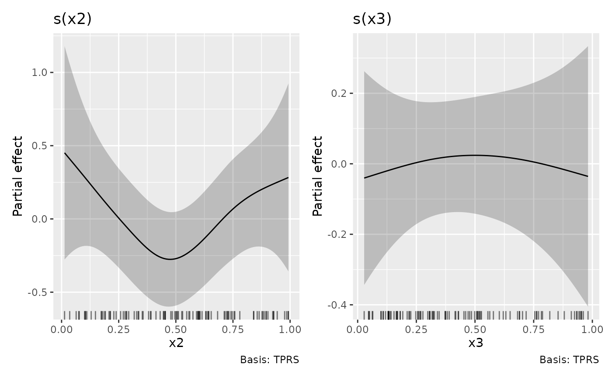

Provides a draw() method for GAMLSS (distributional GAMs) fitted
by GJRM::gamlss().
Arguments
- object
a model, fitted by
GJRM::gamlss()- scales
character; should all univariate smooths be plotted with the same y-axis scale? If
scales = "free", the default, each univariate smooth has its own y-axis scale. Ifscales = "fixed", a common y axis scale is used for all univariate smooths.Currently does not affect the y-axis scale of plots of the parametric terms.
- ncol, nrow
numeric; the numbers of rows and columns over which to spread the plots
- guides
character; one of
"keep"(the default),"collect", or"auto". Passed topatchwork::plot_layout()- widths, heights
The relative widths and heights of each column and row in the grid. Will get repeated to match the dimensions of the grid. If there is more than 1 plot and
widths = NULL, the value ofwidthswill be set internally towidths = 1to accommodate plots of smooths that use a fixed aspect ratio.- ...
arguments passed to
draw.gam()
Examples
if (suppressPackageStartupMessages(require("GJRM", quietly = TRUE))) {
# follow example from ?GJRM::gamlss
load_mgcv()
suppressPackageStartupMessages(library("GJRM"))
set.seed(0)
n <- 100
x1 <- round(runif(n))
x2 <- runif(n)
x3 <- runif(n)
f1 <- function(x) cos(pi * 2 * x) + sin(pi * x)
y1 <- -1.55 + 2 * x1 + f1(x2) + rnorm(n)
dataSim <- data.frame(y1, x1, x2, x3)
eq_mu <- y1 ~ x1 + s(x2)
eq_s <- ~ s(x3, k = 6)
fl <- list(eq_mu, eq_s)
m <- gamlss(fl, data = dataSim)
draw(m)
}
